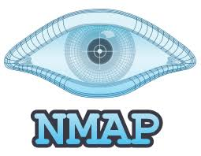
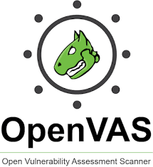

top 10 melhores ferramentas para penteste/hacking
1ºNmap
Nmap – mapeie sua rede e portas com a ferramenta número um de varredura de portas . Portanto o Nmap agora apresenta scripts NSE poderosos que podem detectar vulnerabilidades, configurações incorretas e informações relacionadas à segurança em serviços de rede. Depois de instalar o nmap, verifique os recursos do ncat incluído seu netcat com esteróides.

2ºOpenVAS
OpenVAS – suíte de varredura de vulnerabilidade de código aberto que cresceu a partir de uma ramificação do mecanismo Nessus quando se tornou comercial. Ou seja, gerenciar todos os aspectos de um sistema de gerenciamento de vulnerabilidade de segurança a partir de painéis baseados na web. Assim, para uma varredura externa rápida e fácil com OpenVAS, experimente nosso scanner OpenVAS online .

3ºOSSEC
OSSEC – sistema de detecção de intrusão baseado em host ou HIDS, fácil de instalar e configurar. O OSSEC oferece benefícios de longo alcance para a equipe de segurança e operações.
4ºSecurity Onion
Security Onion – uma distribuição de monitoramento de segurança de rede que pode substituir caras caixas cinza comerciais por luzes piscando. Sobretudo o Security Onion é fácil de instalar e configurar. Portanto com o mínimo de esforço, você começará a detectar eventos relacionados à segurança em sua rede. Detecte tudo, desde crianças escaneadas de força bruta até aqueles APTs nojentos.
5ºMetasploit Framework
Metasploit Framework – teste todos os aspectos de sua segurança com um foco ofensivo. Principalmente uma ferramenta de teste de penetração, o Metasploit possui módulos que não apenas incluem explorações, mas também varredura e auditoria.
6ºOpenSSH
OpenSSH – protege todo o seu tráfego entre dois pontos através do túnel de protocolos inseguros através de um túnel SSH. Inclui scp fornecendo acesso fácil para copiar arquivos com segurança. Portanto, pode ser usado como VPN pobre para pontos de acesso sem fio aberto. Faça um túnel de volta pelo seu computador doméstico e o tráfego será protegido em trânsito. Logo, acesse serviços de rede interna por meio de túneis SSH usando apenas um ponto de acesso. Nesse sentido no Windows, você provavelmente deseja ter o putty como cliente e o winscp para copiar os arquivos. No Linux, basta usar a linha de comando ssh e scp.
7ºWireshark
Wireshark – veja o tráfego com a quantidade de detalhes que desejar. Sobretudo use o Wireshark para seguir fluxos de rede e encontrar problemas. Tcpdump e Tshark são alternativas de linha de comando. O Wireshark é executado em sistemas baseados em Windows, Linux, FreeBSD ou OSX.
8ºNikto
Nikto – uma ferramenta de teste de servidor web que existe há mais de 10 anos. O Nikto é ótimo para disparar em um servidor web para encontrar scripts vulneráveis conhecidos, erros de configuração e problemas de segurança relacionados. Enfim, ele não encontrará os bugs de seu aplicativo da web XSS e SQL, mas encontrará muitas coisas que outras ferramentas deixam passar.
9ºSnort
Snort – é uma ferramenta de análise de tráfego e registro de pacotes em tempo real. Enfim, ele pode ser considerado um IDS tradicional, com detecção realizada por meio da correspondência de assinaturas. O projeto agora é gerenciado pela Cisco, que usa a tecnologia em sua gama de aparelhos SourceFire. Aliás, um projeto alternativo é o sistema Suricata, que é um fork do código fonte original do Snort.

10ºBurp Suite
Burp Suite– é um software desenvolvido em Java pela PortSwigger, para a realização de testes de segurança em aplicações web, é uma das ferramentas de teste de penetração mais populares e poderosas disponíveis no mercado atualmente.